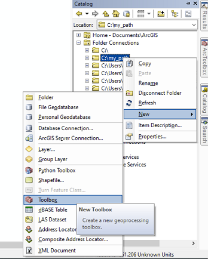
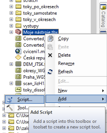

Lekce 12: Uživatelská rozhraní nástrojů
V této kapitole si předvedeme, jak lze ke skriptu, využívajícímu nástroje ArcGIS, vytvořit uživatelské rozhraní tak, aby nástroj vypadal a choval se podobně jako ostatní vestavěné nástroje v ArcToolbox. Jde o podobnou věc, jakou již znáte z lekce 2, kde jste vytvářeli uživatelská rozhraní k modelům z Model Builderu.
Jednoduché rozhraní
Tvorbu nástroje si předvedeme na jednoduchém příkladu nástroje BatchClip, který jste vytvářeli v lekci 10 (viz úlohu X). Příslušný skript může vypadat např. takto:
import arcpy, os.path
# Vstupní parametry
input_folder = r"C:\cesta\ke\slozce\se\vstupnimi\daty"
clip_features = r"C:\cesta\k\polygonove\vrstve\kterou\se\bude\orezavat.shp"
output_folder = r"C:\cesta\ke\slozce\s\oriznutymi\vrstvami"
# Nastavení prostředí
arcpy.env.workspace = input_folder
arcpy.env.overwriteOutput = True
# Dávkové zpracování nástrojem Clip
shps = arcpy.ListFeatureClasses()
for shp in shps:
output = os.path.join(output_folder, shp[:-4] + "_clipped.shp")
arcpy.Clip_analysis(shp, clip_features, output)
Úkol 1. Rozeberte si skript tak, aby vám byl jasný smysl každého řádku. Vyzkoušejte v praxi, že skript funguje.
Vytvořit ke skriptu uživatelské rozhraní znamená zajistit, aby vstupní parametry výpočtu (uvedeny schválně na začátku skriptu v samostatní sekci Vstupní parametry) mohl před spuštěním zadávat uživatel v nějakém přívětivém grafickém rozhraní. Jeho tvorba má dvě části: (1) příprava samotného grafického rozhraní a (2) úprava skriptu tak, aby s tímto rozhraním komunikoval.
Tvorba grafického rozhraní začíná v okně Catalog programu ArcMap. Nástroj - podobně jako v případě Model Builderu - musí existovat v nějakém toolboxu. Pokud tedy žádný připravený nemáte, je třeba jej nyní vytvořit:

(Pochopitelně, v jednom toolboxu můžeme mít uloženo více nástrojů.)
Po vytvoření toolboxu do něj přidáme nový nástroj pomocí kliknutí na něj pravým tlačítkem myši a volbou Add -> Script:

Tím se otevře dialogové okno Add Script, které nás provede tvorbou grafického rozhraní. Na první stránce je třeba zadat název (Name) a popisek (Label) nástroje. Zatímco název by neměl obsahovat diakritiku a mezery, popisek bude tím, pod čím se bude nástroj zobrazovat v toolboxu (může tedy obsahovat mezery a diakritiku). V parametru Description je možné zadat stručný popis fungování nástroje, který se bude zobrazovat v okně nástroje. Parametr Stylesheet umožňuje vybrat jiný než výchozí styl rozhraní, včetně vlastních uživatelsky definovaných stylů. Vlastní styly zde nebudeme řešit, použijeme výchozí styl (tj. ponechte políčko nevyplněné). Poslední dva parametry, zaškrtávací políčka Store relative pathnames a Always run in foreground, je dobré obě zaškrtnout. To první způsobí, že cesta ke skriptu (kterou budeme zadávat hned v dalším kroku) bude brána relativně k poloze toolboxu. To usnadní případnou distribuci nástroje na jiné počítače. Druhá možnost zase zajišťuje, že nástroj vždy poběží na popředí (nikoli na pozadí), což je obecně bezpečnější a stabilnější možnost.

Po kliknutí na Další se v dalším okně zadává cesta k samotnému skriptu. Je dobrou praxí mít skript uložený ve stejné složce, ve které máme uložen i toolbox.

Následuje stránka se zadáváním parametrů nástroje. V horní části je tabulka s parametry, v dolní části jsou vlastnosti daného označeného parametru. Začněte psát do levého sloupce tabulky název parametru. Následně v pravém sloupci vyberte jeho typ. Prvním parametrem bude "Input Workspace", tedy složka se vstupními vrstvami. Typ tohoto parametru může být buď Folder nebo Workspace. Pokud zvolíme první možnost, bude nástroj schopen pracovat pouze v klasické složce se shapefily. Druhá možnost, Workspace, je obecnější a zahrnuje vedle klasické složky i geodatabázi, takže nástroj bude schopen oříznout všechny vektorové vrstvy v nějaké geodatabázi či její datové sadě (Feature Dataset). Je tedy výhodnější zvolit tuto druhou možnost. U tohoto parametru jsou všechny výchozí hodnoty vlastností (v dolní části okna) vyhovující (projděte si je a zkusit usoudit, jaký mají jednotlivé vlastnosti význam).
Dalším parametrem bude ořezová vrstva ("Clip Features"). Jejím typem by mohl být Shapefile, Feature Class nebo Feature Layer. Druhá možnost je oproti první opět obecnější a umožňuje pracovat nejen s shapefily, ale i s vrstvami v geodatabázi. Třetí možnost je nicméně nejlepší, neboť vedle uvedených možností umožňuje i práci s vrstvami v ArcMap. Pokud jí tedy zvolíme (a my ji zvolíme), bude se v nástroji do příslušného parametru automaticky nabízet seznam aktuálně načtených vrstev z mapového dokumentu.
K parametru Clip Features je také vhodné nastavit tzv. Filtr, který neumožní uživateli zadat jiný geometrický typ než polygon. Příslušné nastavení se provede ve vlastnostech parametru, vlastnost Filter.

Po klinutí na Feature Class se otevře okno se zaškrtávacími políčky, kde je třeba ponechat zaškrtnutou pouze možnost "Polygon":

Posledním parametrem bude Output Workspace, tj. složka (či geodatabáze), kam se budou ukládat výstupní vrstvy. Opět půjde o typ Workspace s výchozími nastaveními vlastností. Nyní máme parametry nastaveny a můžeme kliknout na Finish. Po otevření nástroje z Catalogu vidíme připravené uživatelské rozhraní:

Zbývá zařídit, aby se hodnoty parametrů zadané uživatelem v grafickém rozhraní předaly do skriptu pro výpočet. K tomu je slouží funkce GetParameterAsText z balíčku arcpy. Při spuštění nástroje tato funkce přečte hodnotu z uživatelského rozhraní a vrátí jí v podobě textového řetězce. (Poznámka: V našem případě jsou všechny parametry textové - viz skript na začátku lekce - proto jejich předání ve formě textu je to, co potřebujeme. Pokud bychom však chtěli např. zadávat v některých parametrech čísla či jiné datové typy, je nutné je po obdržení hodnoty parametru z funkce GetParamaterAsText zkonvertovat na příslušný datový typ.)
Jediným argumentem funkce GetParameterAsText je index neboli pořadí parametru, který se má číst. Pořadí parametrů přitom odpovídá tomu, jak jsme je seřadili v grafickém rozhraní. Hlavička našeho skriptu proto bude vypadat nyní takto:
import arcpy, os.path
# Vstupní parametry
input_folder = arcpy.GetParameterAsText(0)
clip_features = arcpy.GetParameterAsText(1)
output_folder = arcpy.GetParameterAsText(2)
# Nastavení prostředí
arcpy.env.workspace = input_folder
arcpy.env.overwriteOutput = True
# Dávkové zpracování nástrojem Clip
shps = arcpy.ListFeatureClasses()
for shp in shps:
output = os.path.join(output_folder, shp[:-4] + "_clipped.shp")
arcpy.Clip_analysis(shp, clip_features, output)
Nyní je nástroj připraven a můžeme jej spustit.
Úkol 2. Popsaným způsobem vytvořte rozhraní k nástroji BatchClip a nástroj vyzkoušejte.
Zprávy o průběhu výpočtu
Někdy je výhodné, pokud máme ve skriptu zakomponovány zprávy, jež se mají v určité fázi výpočtu vypisovat na výstup (např. na konzoli Python Shell). Je to výhodné zejména ve dvou případech:
- Pokud je výpočet dlouhý a zahrnuje řadu kroků, případně nějaký cyklus, je možné na začátku každého kroku či iterace cyklu nechat vypsat, co program zrovna dělá. Tak budeme mít přehled, v jaké fázi výpočtu zrovna jsme. Navíc pokud program v nějaké fázi selže a skončí chybovým hlášením, budeme vědět, v jaké fázi výpočtu to bylo a kde v kódu máme tedy hledat chybu.
- Druhou situací je, pokud náš program nefunguje správně a my nevíme, kde je chyba. Máme-li např. podezření, že v určité fázi nějaká proměnná neobsahuje hodnotu, kterou by měla, můžeme si nechat obsah této proměnné v dané fázi výpočtu vypsat. To nám může velmi pomoct při hledání, kde jsme udělali chybu.
V případě našeho jednoduchého nástroje BatchClip bychom mohli např. chtít, aby se v každém kole cyklu vypsala na výstup informace o tom, jakou vrstvu program zrovna zpracovává. Výpis na standardní výstup (např. konzoli Python Shell) se provede jednoduše pomocí funkce print:
import arcpy, os.path, sys
# Vstupní parametry
input_folder = r"C:\cesta\ke\slozce\se\vstupnimi\daty"
clip_features = r"C:\cesta\k\polygonove\vrstve\kterou\se\bude\orezavat.shp"
output_folder = r"C:\cesta\ke\slozce\s\oriznutymi\vrstvami"
# Nastavení prostředí
arcpy.env.workspace = input_folder
arcpy.env.overwriteOutput = True
# Dávkové zpracování nástrojem Clip
shps = arcpy.ListFeatureClasses()
for shp in shps:
print("Working on " + shp + "...")
sys.__stdout__.flush()
output = os.path.join(output_folder, shp[:-4] + "_clipped.shp")
arcpy.Clip_analysis(shp, clip_features, output)
Podivný řádek sys.__stdout__.flush() zajišťuje, že se výpis provede opravdu ihned. Pokud jej neuvedeme, často se nic špatného nestane a výpisy budou fungovat jak mají. Někdy však dochází ke zpoždění výpisů, takže se veškeré výpočty nejprve provedou, a až pak se na konzoli vypíší všechna hlášení najednou. Tím ovšem průběžná hlášení přestávají být průběžná a ztrácí smysl. Objekt __stdout__ z modulu sys (všimněte si, že tento modul musel být na začátku skriptu načten!) reprezentuje tzv. standardní výstup, kterým je v našem případě konzole Python Shell. Jeho metoda flush pak tzv. "vyleje" či "spláchne" vše, co čeká aktuálně ve frontě na vypsání.
Jak je možné podobné zprávy posílat do okna výpočtu nástroje v ArcMap? Zde již klasický print nefunguje, nicméně podobnou práci udělá funkce AddMessage balíčku arcpy. Skript nástroje tedy upravíme následovně:
import arcpy, os.path
# Vstupní parametry
input_folder = arcpy.GetParameterAsText(0)
clip_features = arcpy.GetParameterAsText(1)
output_folder = arcpy.GetParameterAsText(2)
# Nastavení prostředí
arcpy.env.workspace = input_folder
arcpy.env.overwriteOutput = True
# Dávkové zpracování nástrojem Clip
shps = arcpy.ListFeatureClasses()
for shp in shps:
arcpy.AddMessage("Working on " + shp + "...")
output = os.path.join(output_folder, shp[:-4] + "_clipped.shp")
arcpy.Clip_analysis(shp, clip_features, output)
Průběžný výpis při výpočtu nyní vypadá takto:
Úkol 3. Doplňte do nástroje BatchClip běhové zprávy výše uvedeným způsobem a vyzkoušejte.
Vícenásobné a výstupní parametry
Různých typů parametrů a jejich vlastností je velké množství. Některé z nich si ukážeme na příkladu dalšího nástroje, který má pro vstupní seznam vektorových vrstev udělat obalovanou zónu o zadaném poloměru. Obalové zóny vstupních vrstev by přitom měly být spojeny do jediné vrstvy, přičemž prostorově se nepřekrývající části by měly být v samostatných polygonech, naopak prostorově se překrývající části obalové zóny by měly být spojené do jediného polygonu.
Pokud bychom měli na vstupu bodovou, liniovou a polygonovou vrstvu jako na tomto obrázku:

měla by výstupní vrstva vypadat nějak takto:

Skript, který by tuto úlohu zpracovával, by mohl vypadat nějak takto:
import arcpy
# Vstupní parametry
feature_list = [r"C:\vrstva1.shp", r"C:\vrstva2.shp", ...]
buffer_distance = 100
output_features = r"C:\vystupni_vrstva.shp"
# Nastavení environments
arcpy.env.workspace = "in_memory"
arcpy.env.overwriteOutput = True
# Obalové zóny
buffers = []
for fc in feature_list:
b = arcpy.Buffer_analysis(fc, fc + "_buffer", buffer_distance)
buffers.append(b)
# Spojení obalových zón
u = arcpy.Union_analysis(buffers, "union")
arcpy.Dissolve_management(u, output_features, "", "", "SINGLE_PART")
Všimněme si zde několika věcí:
- Pracovní adresář byl na začátku nastaven na
"in_memory". Díky tomu se veškeré průběžné výstupy (tj. všechny výstupy z nástroje Buffer a výstup z nástroje Union) budou dočasně ukládat do operační paměti a nikoli na pevný disk. Pouze konečný výstup z nástroje Dissolve se uloží do umístění specifikovaného v parametruoutput_features. - Seznam
buffers, do kterého se ukládají výsledky jednotlivých obalových zón, obsahuje objekty Result. Ty je však možné použít jako vstupy do dalších analýz. - V nástroji Union se vícenásobný vstup (seznam vrstev, které se mají spojit) zadává jako pythonovský seznam (jaké jiné nástroje s vícenásobným vstupním parametrem znáte?).
- V nástroji Dissolve je parametr multi_part nastaven na hodnotu "SINGLE_PART" (viz nápovědu k tomuto nástroji!). Jelikož je tento parametr až pátý v řadě a předcházejí mu dva nepovinné parametry, u nichž chceme ponechat výchozí hodnoty, je na místě těchto parametrů prázdný řetězec.
Úkol 4. Vyzkoušejte uvedený skript na reálných datech.
Nyní k nástroji vytvoříme uživatelské rozhraní. Postupujeme stejně jako v předchozím případě: přidáme do našeho toolboxu nový skript a projedeme dialogové okno s názvem, umístěním skriptu a tabulkou parametrů. Ta bude vypadat nějak takto:

Nyní se zaměříme na vlastnosti jednotlivých parametrů. První parametr - Input Feature Classes - je sice typu Feature Layer, musíme nicméně zařídit, aby umožňoval zadání více vstupních vrstev. K tomu slouží vlastnost MutliValue, kterou je třeba nastavit na "Yes":

Parametr Buffer Distance je typu Double, parametr Output Buffer Zone Features je typu Feature Layer. U posledního parametru je třeba nastavit vlastnost Direction na "Output", neboť příslušná vrstva ve chvíli spouštění nástroje ještě neexistuje a bude teprve nástrojem vytvořena:

Uživatelské rozhraní nástroje nyní vypadá takto:

Nyní je ještě třeba upravit skript a pomocí funkce GetParameterAsText předat parametry do skriptu:
import arcpy
# Vstupní parametry
feature_list = arcpy.GetParameterAsText(0).split(";")
buffer_distance = float(arcpy.GetParameterAsText(1))
output_features = arcpy.GetParameterAsText(2)
# Nastavení environments
arcpy.env.workspace = "in_memory"
arcpy.env.overwriteOutput = True
# Obalové zóny
buffers = []
for fc in feature_list:
b = arcpy.Buffer_analysis(fc, fc + "_buffer", buffer_distance)
buffers.append(b)
# Spojení obalových zón
u = arcpy.Union_analysis(buffers, "union")
arcpy.Dissolve_management(u, output_features, "", "", "SINGLE_PART")
Všimněme si dvou věcí:
- Do parametru
feature_listpředá funkceGetParameterAsTextjednotlivé vstupní vrstvy jako jeden textový řetězec, ve kterém jsou adresy jednotlivých vstupních vrstev za sebou oddělené středníky. (To je díky tomu, že jsme v grafickém rozhraní u příslušného parametru nastavili jeho vlastnost MultiValue na "Yes".) Metodasplit(";")zavolaná na tomto řetězci z něj vytvoří pythonovský seznam, který je možné následně v cyklu procházet a vytvářet obalové zóny. - U parametru buffer_distance je třeba hodnotu vrácenou funkcí
GetParameterAsTextpřevést na číselný typ funkcífloat, jinak by se totiž jednalo o textový řetězec. (Ve skutečnosti by nástroj Buffer akceptoval i textový vstup, ale v řadě jiných případů je třeba textový výstup funkceGetParameterAsTextpřevést na jiný datový typ.)
Úkol 5. Vytvořte uvedený nástroj a vyzkoušejte jeho funkčnost.
Poznámka na závěr: Parametr Buffer Distance je typu Double, mohli bychom však s výhodou použít i typ Linear unit, který nabízí i volbu jednotek. V takovém případě ale nelze hodnotu parametru předanou funkcí GetParameterAsText převádět na číslo, neboť půjde o text typu "100 Meters". Ten je však možné přímo použít jako vstup do nástroje Buffer.
Rozhraní nástroje bude s parametrem typu Linear unit vypadat takto:
Odvozené parametry
Převod vektorové vrstvy na rastr...
Nápověda
Závěrečné poznámky
Shrnutí
Úlohy
- Vytvořte uživatelské rozhraní k nástroji MultiBuffer.